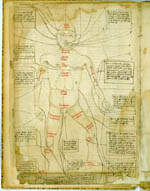

Johannes Ketham, Fasciculus medicinae (onvolledig), en andere medische werkjes. Latijn en Middelnederlands. Handschrift op papier, 15 ff., 290 x 170 mm. Zuidwestelijke Nederlanden, einde van de vijftiende eeuw. -- (BPL 1905)
In allerlei varianten komt men in de late middeleeuwen pseudo-anatomische voorstellingen tegen van aderlaatfiguren en zodiakmensen. Vooral de latere gaan veelal terug op de Fasciculus medicinae van Johannes Ketham, over wiens leven vrijwel niets bekend is. De populariteit van het werk nam nog toe, nadat de drukkers, voor het eerst in 1491, zich ervan hadden meester gemaakt.
De figuren zijn steeds frontaal naar de toeschouwer gericht. Zo ook de aderlaatman in dit gehavende handschrift op folio 3v. De aderen die geschikt waren om bloed af te nemen, zijn maar heel globaal aangegeven; de kwalen zijn omschreven in de verklarende tekst. De namen van de tekens van de dierenriem zijn als bij zodiakfiguren (afbeelding 22) van kop tot voeten over het lichaam verspreid. Ook deze figuur werd door Ketham in zijn werkje opgenomen.
Literatuur
- [P.C. Molhuysen], Codices Bibliothecae Publicae Latini. Lugduni Batavorum 1912 ( = Bibliotheca Universitatis Leidensis Codices manuscripti. III), p. 186.
- W. de Vreese en G.I. Lieftinck, Artikel 1485 van ‘Bouwstoffen’, in: E. Verwijs en J. Verdam, Middelnederlandsch woordenboek. Dl. 10. ’s-Gravenhage 1927-1952.
| vorige pagina | top pagina |